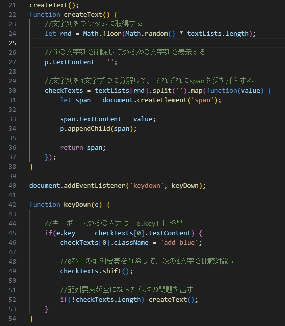

（１）プログラミング基礎 -24を受講して印象深かった事は・・・
● 変数と関数
● 条件分岐
● テスト駆動開発（TDD）
● 配列とオブジェクト
● for in, for on, whileのループ
● 高階関数
● HTMLとCSSとJavaScriptの関連性
● モンキータイプ
● アセスメント
配列やオブジェクトとその材料に拘った、
モンキータイプ的なことはできないだろうか・・・
（２）キャメルケース的・簡易アプリの開発トライ
（３）Javascriptコードの拘りどころ
その１：TMC用語をモンキータイプ的に配列として用意
※本当はオブジェクトにして、キーの略語を表示して、詳細をタイプするアプリにしたかったが断念！
※本当は単語と単語の間にスペースを設けたかったが、Web画面ではスペースを押すとページが下にズレる!?
苦肉の策でキャメルケースに・・・
その２：タイプすると文字色が変わる
ネット上で使えるコードをひたすら収集して不明点がありながらもなんとか完成
（４）研修を終えての所感
新年度より事業開発本部内のＴＰＳ/ＤＸを推進するＧに配属され、本部内ではノーコードが主流となりつつある中で、
あえてコードを構築する本研修の傘下を希望しました。しかし、久しぶりのプログラミングであり、なかなか理解が追いつかず、
演習等では組んだメンバーにご迷惑をおかけしました。とはいえ、HTML、CSS、そしてJavaScriptの関連性の理解ができ、
既存コードを見て、不明な関数等を調べながらであれば、ある程度内容が理解できるぐらいにはなれたと思います。
本研修を準備いただいた、デジタル変革推進部の方々、講師、インストラクター、そして参加メンバーの方々に感謝いたします！